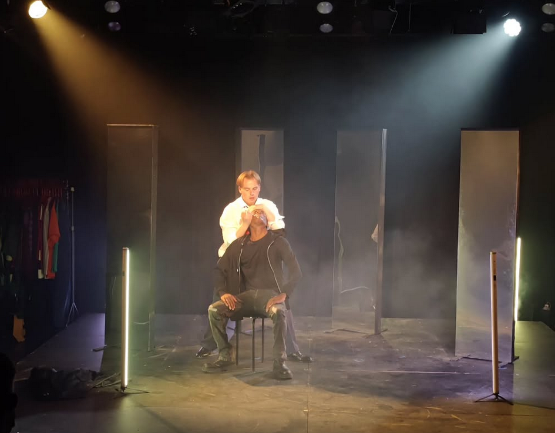
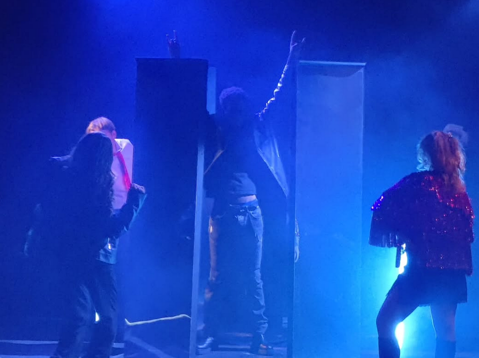
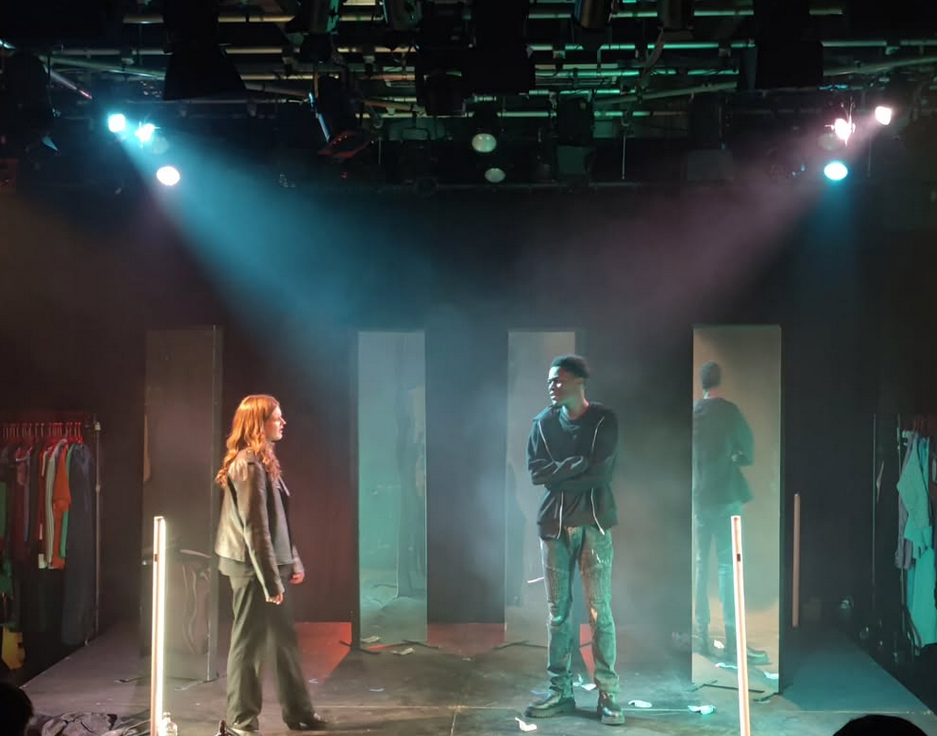

"Birdland" (May 2025) | design | rigging | programming
Birdland was part of the BCT 2025 show season at Rose Bruford College. This exciting and dynamic play follows Paul, a cocky and arrogant rockstar with a questionable grip on reality. Supported by movable mirrors and LED tubes I created a lighting design that becomes more fractured as the show takes its course, reflecting the protagonist's ever more tenuous grip on reality.


